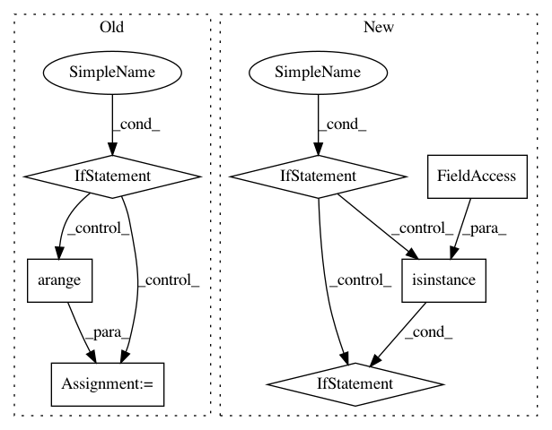

be24159959672c32abb31697e721d96ae6ffaf97,keras/wrappers/scikit_learn.py,BaseWrapper,fit,#BaseWrapper#Any#Any#,97
Before Change
history : object
Returns details about the training history at each epoch.
if len(y.shape) == 1:
self.classes_ = list(np.unique(y))
if self.loss == "categorical_crossentropy":
y = to_categorical(y)
else:
self.classes_ = np.arange(0, y.shape[1])
self.compiled_model_ = copy.deepcopy(self.model)
self.compiled_model_.compile(optimizer=self.optimizer, loss=self.loss)
history = self.compiled_model_.fit(
X, y, batch_size=self.train_batch_size, nb_epoch=self.nb_epoch, verbose=self.verbose,
After Change
details about the training history at each epoch.
"""
if self.build_fn is None:
self.model = self.__call__(**self.filter_sk_params(self.__call__))
elif not isinstance(self.build_fn, types.FunctionType):
self.model = self.build_fn(
**self.filter_sk_params(self.build_fn.__call__))
else:
self.model = self.build_fn(**self.filter_sk_params(self.build_fn))
if self.model.loss.__name__ == "categorical_crossentropy"\
and len(y.shape) != 2:
y = to_categorical(y)
In pattern: SUPERPATTERN
Frequency: 3
Non-data size: 7
Instances
Project Name: keras-team/keras
Commit Name: be24159959672c32abb31697e721d96ae6ffaf97
Time: 2016-02-27
Author: ipod825@gmail.com
File Name: keras/wrappers/scikit_learn.py
Class Name: BaseWrapper
Method Name: fit
Project Name: prody/ProDy
Commit Name: fa926b8278a3b635d929e0fe6c63ac2a8983a406
Time: 2012-12-15
Author: lordnapi@gmail.com
File Name: lib/prody/dynamics/nma.py
Class Name: NMA
Method Name: __getitem__
Project Name: yangyanli/PointCNN
Commit Name: 161b24af716a1e7a3221fce2903544ac1429387d
Time: 2018-06-08
Author: yangyan.lee@gmail.com
File Name: pointfly.py
Class Name:
Method Name: get_indices